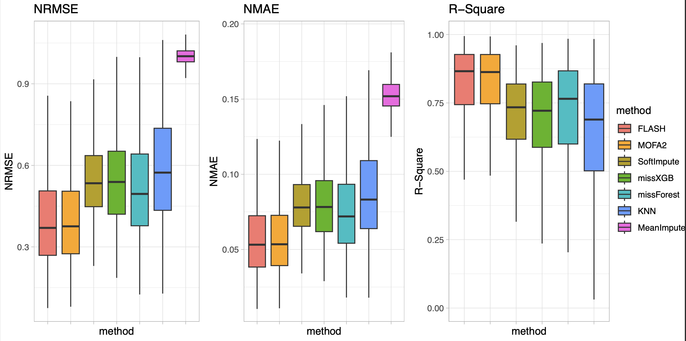

Last updated: 2025-04-12
Checks: 7 0
Knit directory:
omics-imputation-paper/analysis/
This reproducible R Markdown analysis was created with workflowr (version 1.7.1). The Checks tab describes the reproducibility checks that were applied when the results were created. The Past versions tab lists the development history.
Great! Since the R Markdown file has been committed to the Git repository, you know the exact version of the code that produced these results.
Great job! The global environment was empty. Objects defined in the global environment can affect the analysis in your R Markdown file in unknown ways. For reproduciblity it’s best to always run the code in an empty environment.
The command set.seed(1) was run prior to running the
code in the R Markdown file. Setting a seed ensures that any results
that rely on randomness, e.g. subsampling or permutations, are
reproducible.
Great job! Recording the operating system, R version, and package versions is critical for reproducibility.
Nice! There were no cached chunks for this analysis, so you can be confident that you successfully produced the results during this run.
Great job! Using relative paths to the files within your workflowr project makes it easier to run your code on other machines.
Great! You are using Git for version control. Tracking code development and connecting the code version to the results is critical for reproducibility.
The results in this page were generated with repository version a394ac0. See the Past versions tab to see a history of the changes made to the R Markdown and HTML files.
Note that you need to be careful to ensure that all relevant files for
the analysis have been committed to Git prior to generating the results
(you can use wflow_publish or
wflow_git_commit). workflowr only checks the R Markdown
file, but you know if there are other scripts or data files that it
depends on. Below is the status of the Git repository when the results
were generated:
Ignored files:
Ignored: .Rproj.user/
Untracked files:
Untracked: .gitignore
Note that any generated files, e.g. HTML, png, CSS, etc., are not included in this status report because it is ok for generated content to have uncommitted changes.
These are the previous versions of the repository in which changes were
made to the R Markdown
(analysis/imputation_accuracy_benchmark.Rmd) and HTML
(docs/imputation_accuracy_benchmark.html) files. If you’ve
configured a remote Git repository (see ?wflow_git_remote),
click on the hyperlinks in the table below to view the files as they
were in that past version.
| File | Version | Author | Date | Message |
|---|---|---|---|---|
| Rmd | 2ac420e | “John | 2025-04-12 | initial upload |
| html | 2ac420e | “John | 2025-04-12 | initial upload |
This page performs a benchmark comparison of different imputation methods (EBMF, MOFA2, softImpute, missXGB, missForest, KNN, and MeanImpute) for missing data in omics data. The script calculates and visualizes three key metrics: Normalized Root Mean Square Error (NRMSE), Normalized Mean Absolute Error (NMAE), and R-Square.
First, load the packages needed for this analysis and the original phenotype data.
library(tidyverse)
library(data.table)
library(pheatmap)
library(gridExtra)
phenotype <- read_delim('knight_QCed.bed.gz') # Example datasetThe phenotype should be a dataset in which rows are
features (i.e. proteins, CpG sites, metabolites) and columns are
samples.
Then, introduce random missing values to the dataset for benchmarking.
# Function of adding random missing up to 50%
source('code/random_missing_generation.R')
# Assign additional missing to orginal matrix
missing <- 0.5
pheno_add_NAs <- pheno[, -c(1:4)] # get rid of first four columns of matrix, chr, start, end , and ID
mat_na <- add_missing_values(pheno_add_NAs, missing = missing)
mat_na <- as.data.frame(mat_na)
# write_delim(cbind(pheno[, 1:4], pheno_NAs), 'knight_to_impute.bed.gz', delim = '\t')Additionally, to have more realistic pattern of missing, we also introduce realistic missing to omics data for bechmarking.
source('codes/R/realistic_missing_generation.R')
samples <- colnames(pheno)[-c(1:4)]
# remove features with more than\>50% missingness
pheno[ , pct.na:=rowSums(is.na(.SD))/length(samples),.SDcols=samples]
pheno <- pheno[pct.na<0.5] In this realistic missing generation, a masking strategy is used: instead of generating missing at a certain probability p in each cluster, p is used to pick the best row/column in the reference missing data as a mask to generate the missing. It allows to better capture the real missing pattern.
mat <- as.matrix(data.frame(pheno[,.SD,.SDcols=c('ID',samples)],row.names = 'ID'))
# apply missing Pattern on lowly missing matrix
# until reach the %missingness of the observed matrix
observed.missrate <- sum(is.na(mat))/length(mat)
features_lo <- pheno[pct.na<0.05]$ID
length(features_lo)
mat_lo <- as.matrix(data.frame(pheno[,.SD,.SDcols=c('ID',samples)],row.names = 'ID')[features_lo,])
mat_na <- ApplyMissingPattern2(query = mat_lo,reference = mat,
missrate.threshold = observed.missrate,n_threads = n_threads)Check the new simulated missingness compared to the real one
print(paste('observed missing rate: ',round(observed.missrate*100,digits = 2)))
sim.missrate <- sum(is.na(mat_na))/length(mat_na)
print(paste('simulated missing rate: ', round(sim.missrate*100,digits = 2)))
SimNas <- is.na(mat_na)!=is.na(mat_lo[rownames(mat_na),colnames(mat_na)])
ShowNAPattern(SimNas, main = 'Generated NA Pattern')
RealNas <- is.na(mat)
ShowNAPattern(RealNas, main = 'Real NA Pattern')Save the simulated matrix for subsequent imputation benchmarking
fwrite(data.table(mat_na,keep.rownames = 'ID'),
'Knight_realistic_missing_simulated.csv.gz')Extract entries where values are missing in the modified dataset but present in the original dataset (these will serve as the ground truth for benchmarking).
rownames(mat_na) <- pheno$ID
Xna <- as.matrix(mat_na)
Xcomp <- as.matrix(pheno[, -c(1:4)])
rownames(Xna) <- pheno$ID
rownames(Xcomp) <- pheno$ID
NAloc1 = is.na(Xcomp)
NAloc2 = is.na(Xna)
NAtoUse = NAloc1 == FALSE & NAloc2 == TRUE
# Extract a table that only have entries will be used for benchmark, true value
tobeimputed <- data.table(ID=rownames(Xcomp)[which(NAtoUse,arr.ind=TRUE)[,'row']],
sample_id=colnames(Xcomp)[which(NAtoUse,arr.ind=TRUE)[,'col']],
true=Xcomp[NAtoUse])source('code/EBMF.R')
# Impute with EBMF
Ximp.ebmf <- EBMFimp(mat_na)
# Impute with gEBMF
Ximp.ebmf <- gEBMF(mat_na)The first step need to train a MOFA model, which we recommend using
python to do this. Please ensure to install mofapy2 by using
pip install mofapy2.
Here is the python script of trainning the model, the first three columns of the input are chr, start, end, and ID.
from mofapy2.run.entry_point import entry_point
import pandas as pd
import os
## Force the number of threads used in numpy.
os.environ["OMP_NUM_THREADS"] = "8" # export OMP_NUM_THREADS=4
os.environ["OPENBLAS_NUM_THREADS"] = "8" # export OPENBLAS_NUM_THREADS=4
os.environ["MKL_NUM_THREADS"] = "8" # export MKL_NUM_THREADS=6
import numpy as np
## Data
data = pd.read_csv('Knight_to_impute.bed.gz',"\t",index_col = 3).drop(["#chr","start","end"],axis = 1)
# initialise the entry point
ent = entry_point()
# Guess number of factor
# Suggest the number of factors to use if no input value
num_factor = 0
if num_factor == 0:
if len(data.columns) < 150:
num_factor = 15
elif len(data.columns) < 250:
num_factor = 30
elif len(data.columns) < 350:
num_factor = 45
else:
num_factor = 60
# Set data
# MOFA is a multi-view and multi-group inference framework.
# If usig only a single view and a single group (as in PEER), the data needs to be embedded into a nested list
ent.set_data_matrix([[data.transpose()]],samples_names=[data.columns.values.tolist()], features_names=[data.index.values.tolist()])
ent.set_model_options(factors= num_factor , spikeslab_weights=False, ard_weights=False) # num_factor could be adjusted
ent.set_train_options(iter=1000, convergence_mode="fast" , gpu_mode=False, verbose=True, startELBO=1, freqELBO=1,tolerance=0.001, seed=42)
ent.build()
ent.run()
ent.save('knight_model.hd5')
## To fix issue https://github.com/cumc/xqtl-pipeline/issues/420
import h5py
right_name = [x.encode("UTF-8") for x in ent.data_opts["features_names"][0]]
new_hd5 = h5py.File('knight_model.hd5', "r+")
del new_hd5["features/view0"]
new_hd5["features"].create_dataset("view0", data=np.array(right_name))
new_hd5.close()After this step, a hd5 file will be generated and saved to your working dictionary. Then, impute the missing data by using this model in R.
# load mofa model
file <- "knight_model.hd5"
model <- load_model(file)
# Impute missing values in all data modalities
imputed_data <- impute(model, views = "all")
impute <- get_imputed_data(imputed_data)
#df <- get_data(imputed_data, as.data.frame = T)
Ximp.mofa <- impute[["view0"]]$group0
#colnames(Ximp.mofa) <- colnames(pheno_NAs)source('code/soft_imp.R')
# Impute with softImpute
Ximp.soft <- soft_imputation(mat_na)source('code/xgb_imp.R')
# Impute with softImpute
Ximp.xgb <- xgboost_imputation(mat_na)source('code/rf_imp.R')
# Impute with softImpute
Ximp.rf <- missForest(as.matrix(mat_na), parallelize = 'variables')$ximpsource('code/knn_imp.R')
# Impute with softImpute
Ximp.knn <- knn_imputation(mat_na)source('code/mean_imp.R')
# Impute with softImpute
Ximp.mean <- mean_imputation(mat_na)source('code/lod_imp.R')
# Impute with softImpute
Ximp.lod <- lod_imputation(mat_na)For each method,Load imputed datasets and extract values corresponding to the benchmark entries.
# Extract imputed values
ebmf.imp <- data.table(ID = rownames(NAtoUse)[which(NAtoUse,arr.ind=TRUE)[,'row']],
sample_id = colnames(NAtoUse)[which(NAtoUse,arr.ind=TRUE)[,'col']],
imputation = Ximp.ebmf[rownames(NAtoUse),colnames(NAtoUse)][NAtoUse])
mofa.imp <- data.table(ID = rownames(NAtoUse)[which(NAtoUse,arr.ind=TRUE)[,'row']],
sample_id = colnames(NAtoUse)[which(NAtoUse,arr.ind=TRUE)[,'col']],
imputation = Ximp.mofa[rownames(NAtoUse),colnames(NAtoUse)][NAtoUse])
soft.imp <- data.table(ID = rownames(NAtoUse)[which(NAtoUse,arr.ind=TRUE)[,'row']],
sample_id = colnames(NAtoUse)[which(NAtoUse,arr.ind=TRUE)[,'col']],
imputation = Ximp.soft[rownames(NAtoUse),colnames(NAtoUse)][NAtoUse])
xgb.imp <- data.table(ID = rownames(NAtoUse)[which(NAtoUse,arr.ind=TRUE)[,'row']],
sample_id = colnames(NAtoUse)[which(NAtoUse,arr.ind=TRUE)[,'col']],
imputation = Ximp.xgb[rownames(NAtoUse),colnames(NAtoUse)][NAtoUse])
rf.imp <- data.table(ID = rownames(NAtoUse)[which(NAtoUse,arr.ind=TRUE)[,'row']],
sample_id = colnames(NAtoUse)[which(NAtoUse,arr.ind=TRUE)[,'col']],
imputation = Ximp.rf[rownames(NAtoUse),colnames(NAtoUse)][NAtoUse])
knn.imp <- data.table(ID = rownames(NAtoUse)[which(NAtoUse,arr.ind=TRUE)[,'row']],
sample_id = colnames(NAtoUse)[which(NAtoUse,arr.ind=TRUE)[,'col']],
imputation = Ximp.knn[rownames(NAtoUse),colnames(NAtoUse)][NAtoUse])
mean.imp <- data.table(ID = rownames(NAtoUse)[which(NAtoUse,arr.ind=TRUE)[,'row']],
sample_id = colnames(NAtoUse)[which(NAtoUse,arr.ind=TRUE)[,'col']],
imputation = Ximp.mean[rownames(NAtoUse),colnames(NAtoUse)][NAtoUse])Then, compute feature-wise NRMSE, NMAE, and R-square to evaluate imputation performance for each method. First is to merge missing entries for different imputation.
# Merge missing entries for different imputation
imput <- rbindlist(list(ebmf.imp[,method:='EBMF'],
mofa.imp[,method:='MOFA2'],
soft.imp[,method:='SoftImpute'],
xgb.imp[,method:='missXGB'],
rf.imp[,method:='missForest'],
knn.imp[,method:='KNN'],
mean.imp[,method:='MeanImpute']),fill = T)
imput <- merge(imput, tobeimputed)After merging, we calculate performance of each method.
# calculate sd and range from original dataset
pheno <- fread('knight_QCed.bed.gz')
samples <- colnames(pheno)[-(1:4)]
pheno[,pct.na:=rowSums(is.na(.SD))/length(samples),.SDcols=samples]
pheno <- pheno[pct.na<0.5]
pheno[,sd:=apply(.SD,1,sd,na.rm=T),.SDcols=samples]
pheno[,range:=apply(.SD,1,function(x)max(x,na.rm=T)-min(x,na.rm=T)),.SDcols=samples]
rownames(pheno) <- pheno$ID
#calc Perf
imput[,error:=imputation-true]
imput[,mae:=mean(abs(error)),by=c('method')]
imput[,mse:=mean(error^2),by=c('method')]
imput[,nmae:=mae/(max(true)-min(true)),by=c('method')]
imput[,nmse:=mse/var(true),by=c('method')]
imput[,r2:=cor(imputation,true)^2,by=c('method')]
#by feature normalization
imput[,nmae_feature:=mean(abs(error))/(max(true)-min(true)),by=c('ID','method')]
imput[,nmse_feature:=mean(error^2)/var(true),by=c('ID','method')]
imput[,r2_feature:=cor(imputation,true)^2,by=c('ID','method')]
imput[,mae_feature:=mean(abs(error)),by=c('ID','method')]
imput[,mse_feature:=mean(error^2),by=c('ID','method')]
imput[,r2_feature:=cor(imputation,true)^2,by=c('ID','method')]
res_features <- unique(imput,by=c('ID','method'))
res_features <- merge(res_features,pheno[,.(ID,sd,range)], by = 'ID')
res_features[,NRMSE:=sqrt(mse_feature)/sd]
res_features[,NMAE:=mae_feature/range]
boxnrmse <- res_features[,boxplot.stats(NRMSE)$stats,by='method']
boxnmae <- res_features[,boxplot.stats(NMAE)$stats,by='method'] Fianlly, we visualize the performance metrics for comparison.
get_legend<-function(myggplot){
tmp <- ggplot_gtable(ggplot_build(myggplot))
leg <- which(sapply(tmp$grobs, function(x) x$name) == "guide-box")
legend <- tmp$grobs[[leg]]
return(legend)
}p1 <- ggplot(res_features)+
geom_boxplot(aes(x=method,y=NRMSE,fill=method),outlier.shape = NA) +
coord_cartesian(ylim = range(boxnrmse$V1))+
#scale_fill_manual(values=custom_colors, labels = c("FLASH", "SoftImpute", "missXGB", "missForest", "KNN", "MeanImpute", "MOFA2")) +
theme_light()+
theme(axis.text.x = element_blank()) +
scale_x_discrete(guide = guide_axis(angle=60)) +ggtitle('NRMSE')
legend <- get_legend(p1)
p2 <- ggplot(res_features)+
geom_boxplot(aes(x=method,y=NMAE,fill=method),outlier.shape = NA) +
coord_cartesian(ylim = range(boxnmae$V1))+
#scale_fill_manual(values=custom_colors)+
theme_light()+
theme(legend.position = "none", axis.text.x = element_blank()) +
scale_x_discrete(guide = guide_axis(angle=60)) +ggtitle('NMAE')
p3<-ggplot(res_features)+
geom_boxplot(aes(x=method,y=r2_cpg,fill=method),outlier.shape = NA) +
coord_cartesian(ylim = c(0, 1))+
theme_light()+
theme(legend.position = "none", axis.text.x = element_blank()) +
scale_x_discrete(guide = guide_axis(angle=60)) +ggtitle('R-Square') +
#scale_fill_manual(values = custom_colors) +
labs(y = 'R-Square')
p1 <- p1 + theme(legend.position="none")
# Arrange ggplot2 graphs with a specific width
grid.arrange(p1, p2, p3, legend, ncol=4, widths=c(2.3, 2.3, 2.3, 0.8))
sessionInfo()R version 4.4.3 (2025-02-28)
Platform: aarch64-apple-darwin20
Running under: macOS Sequoia 15.4
Matrix products: default
BLAS: /Library/Frameworks/R.framework/Versions/4.4-arm64/Resources/lib/libRblas.0.dylib
LAPACK: /Library/Frameworks/R.framework/Versions/4.4-arm64/Resources/lib/libRlapack.dylib; LAPACK version 3.12.0
locale:
[1] en_US.UTF-8/en_US.UTF-8/en_US.UTF-8/C/en_US.UTF-8/en_US.UTF-8
time zone: America/Chicago
tzcode source: internal
attached base packages:
[1] stats graphics grDevices utils datasets methods base
loaded via a namespace (and not attached):
[1] vctrs_0.6.5 cli_3.6.4 knitr_1.50 rlang_1.1.5
[5] xfun_0.51 stringi_1.8.7 png_0.1-8 promises_1.3.2
[9] jsonlite_2.0.0 workflowr_1.7.1 glue_1.8.0 rprojroot_2.0.4
[13] git2r_0.36.2 htmltools_0.5.8.1 httpuv_1.6.15 sass_0.4.9
[17] rmarkdown_2.29 grid_4.4.3 evaluate_1.0.3 jquerylib_0.1.4
[21] tibble_3.2.1 fastmap_1.2.0 yaml_2.3.10 lifecycle_1.0.4
[25] whisker_0.4.1 stringr_1.5.1 compiler_4.4.3 fs_1.6.5
[29] Rcpp_1.0.14 pkgconfig_2.0.3 rstudioapi_0.17.1 later_1.4.1
[33] lattice_0.22-6 digest_0.6.37 R6_2.6.1 reticulate_1.42.0
[37] pillar_1.10.1 magrittr_2.0.3 Matrix_1.7-3 bslib_0.9.0
[41] tools_4.4.3 cachem_1.1.0